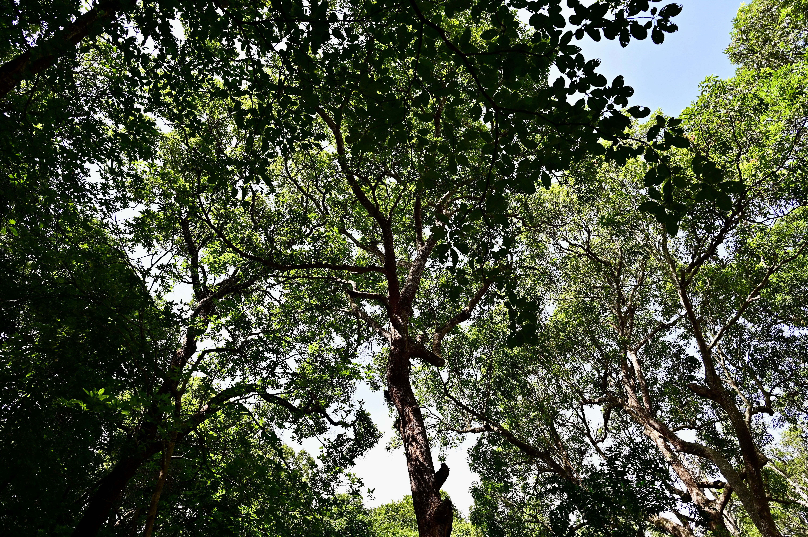

Explore os biomas brasileiros
Selecione uma região no mapa para descobrir mais.
O Brasil reúne seis biomas, cada um com paisagens, clima e espécies próprias. Selecione uma região no mapa para conhecer melhor sua natureza.
Clima
Do tropical úmido ao subtropical, varia entre as regiões do país.
Vegetação
Florestas, savanas, campos e áreas alagáveis compõem diferentes paisagens.
Fauna
Uma grande variedade de espécies vive nos biomas brasileiros.
Onde ocorre
Os seis biomas se distribuem por todas as regiões do Brasil.